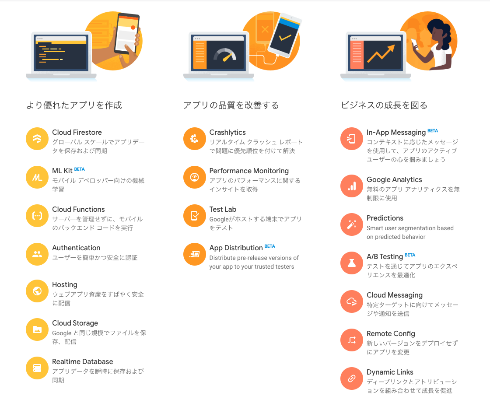

このカリキュラムでは、firebaseというクラウドサービスを使って、簡単にWebサービスを作る方法を学びます。
firebaseはGoogleが提供するWebとモバイルのための開発プラットフォームです。
firebaseには、さまざまな機能がありますが、まずは、Hosting、Cloud Firestore、Authenticationの3つの機能を使って、簡単なWebチャットを作ってみましょう。
CodeCampのHTML/CSSカリキュラムを修了している、または、修了相当の知識を持っていること。
CodeCampのjavascriptカリキュラムを修了している、または、修了相当の知識を持っていること。
Windowsのコマンドプロンプト、Macのターミナルがある程度抵抗感なく使えること。
各コマンドに関しては、今回のカリキュラムで追々覚えていってもらっても大丈夫です。
この教材を学習するためには以下の準備が必要です。
1のGoogleアカウントは、CodeCampをご受講の方はすでに準備済みだと思います。
2のNode.jsのインストールは、インターネットで調べると、OSごとにインストール方が載っています。 firebaseの公式ドキュメントも参考にしてください。
3のIDEは、IntelliJ IDEAが有料（年間1万円ほど）、他は無料です。
できることや画面構成はどれも似通っていますので、どれでも好きなものを選んでください。
準備でわからないところがある場合は、チャットで聞いてくださいね。
※ ただし、私はMacしか持っていないので、Windows固有の問題に答えるのは少し難しいです。ご了承ください。
とにかくまずは使ってみましょう。驚くほど簡単です。
ブラウザでの操作は、動画で解説を付けています。(動画)
https://firebase.google.com/からfirebaseコンソールへ移動する。
プロジェクトを作成する。
これでプロジェクトが作成されました。
本来私達が準備しなければいけない様々なことを、firebaseが肩代わりしてくれるようになります。

こんなにたくさんの機能があります。
このカリキュラムでは、その中の、
の3つを使ってみましょう。
どれくらい簡単にWebを公開できるか、実際に「Hosting」を使ってみましょう。
まずは、準備として、公開するための簡単なHTMLファイルを作っておきます。
適当な場所にmy_first_appというフォルダを作り、その中にappというフォルダを作ります。
次に、IDEでmy_first_appフォルダを開きます。
そして、appの中に、index.htmlを作って、以下のように書きましょう。
<!DOCTYPE html>
<html lang="ja">
<head>
<meta charset="UTF-8">
<title>シンプルチャット</title>
</head>
<body>
<div id="box">シンプルチャット</div>
</body>
</html>準備ができたら、firebaseコンソールで、Webアプリに追加します。
動画を見ながら進めてください。
操作画面に指示が出てくるので、その指示通りに操作します。
まず、firebaseの機能を呼び出す<script>を、</body>のすぐ上に入れましょう。
<!DOCTYPE html>
<html lang="ja">
<head>
<meta charset="UTF-8">
<title>シンプルチャット</title>
</head>
<body>
<div id="box">シンプルチャット</div>
<!-- The core Firebase JS SDK is always required and must be listed first -->
<script src="/__/firebase/7.1.0/firebase-app.js"></script>
<!-- TODO: Add SDKs for Firebase products that you want to use
https://firebase.google.com/docs/web/setup#available-libraries -->
<!-- Initialize Firebase -->
<script src="/__/firebase/init.js"></script>
</body>
</html>指示に載っているコマンド（灰色の部分）は、IDEのターミナルで実行します。
ターミナルでのコマンド実行は、my_first_appフォルダ（プロジェクト）が開いている状態で行います。
（カレントディレクトリがmy_first_appになっている状態のことです。）
まずは、
npm install -g firebase-tools
とコマンドを打ち込みます。 上のコマンドがうまくいかない場合は、sudoをつけてみてください。
sudo npm install -g firebase-tools
次は、firebase loginでログイン後、
firebase init
を実行すると、いろいろな質問に答える形で初期化が進みます。
動画を参考に進めてください。
最後に、
firebase deploy
と、コマンドを打ちます。
うまくいくと、
Hosting URL: https://xxxx.firebaseapp.com
と表示されるので、ブラウザでそのURLにアクセスします。
きちんと表示されましたか？
このURLには、全国どこからでもアクセスできます。つまりインターネット上に公開されたということですね。
物理サーバの準備や、レンタルサーバの契約、そこへのOSインストールやファイルアップロード、私達はこのどれもやりませんでした。
コマンドひとつで、全て、firebaseがやってくれます。とっても便利ですね。
次はstep2に進みます